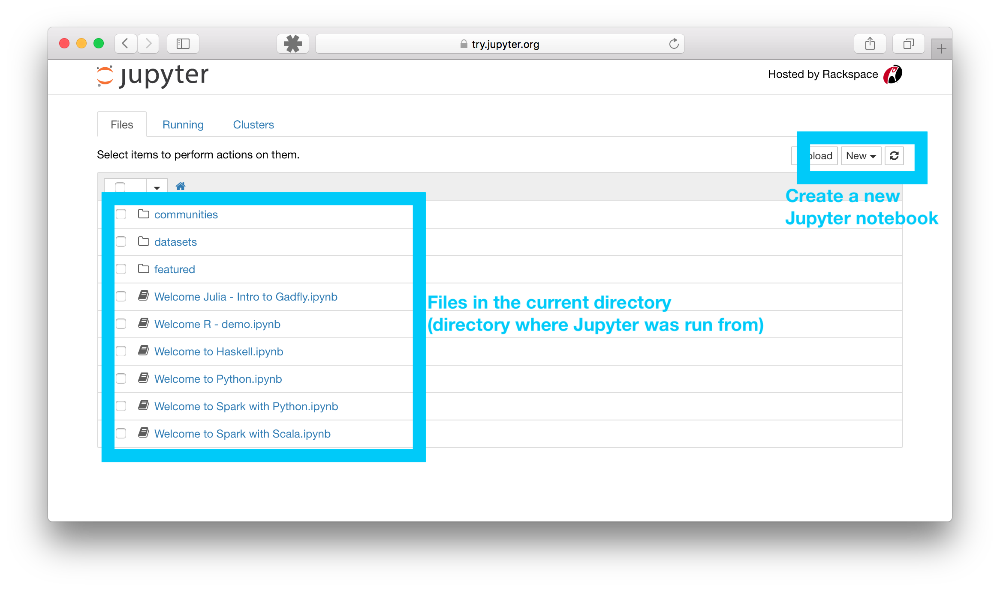
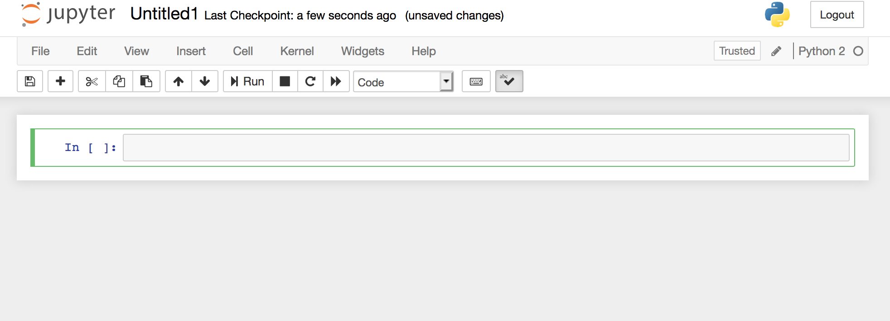
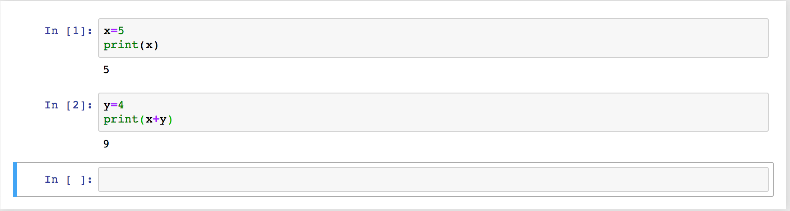

We will use python bundled with a few key scientific modules (Numpy,
Scipy, and Matplotlib) in an installation called "Anaconda" that you
can download from here. I recommend the
Python 3.7 version. Version 2.7 will work for this class, but
there may be a few 2.7<->3.7 translation issues with provided code
(mostly with print statements).
I suggest the graphical installer, but if you prefer the command line,
you can use that. Your computer needs to have a 64-bit processor.
To determine whether your system has a 32-bit or 64-bit processor, see
the following links: Mac
Users or Windows
Users. If you have a 32-bit processor, you will need an older
version of Anaconda (check here
for windows).
I recommend doing python development in Jupyter. This is what the
I will use in class. It is also far easier to read compared to standard python enviroments. Jupyter code allows for the submission of code and
results together, imbed plots with the code, and add in detailed
comments via markdown
(including with latex). These are particularly useful if your code
does not run on the TA's or the Professor's computer, since we can
still see the results. Jupyter notebooks are increasingly common
among astronomers, and many tools on Github include Jupyter-based guides. Jupyter
is included with Anaconda, but if you have an existing python install you
can find instructions for intalling Jupyter here with pip or Conda commands.
The other option is Spyder, which is also included with Anaconda. If you want to use this,
you should switch to the
Spyder guide.
Part II: Getting Started and Recording Your Work (Jupyter)
After installing
Jupyter can be launched from the command prompt (Terminal on
Mac). Accessing the command prompt varies by system, but a quick
Google search will provide a wealth of guides.
From the prompt/terminal, run the command:
jupyter notebook
Which will open up Jupyter in your default browser. More information
(including troubleshooting) on running Jupyter can be found here
You should see a screen that looks like this:

This is wher eyou can open existing notebooks (programs) or make new
ones. When started, the Jupyter Notebook App can access only files within
its start-up folder (including any sub-folder). No configuration is
necessary if you place your notebooks in your home folder or
subfolders. Some more details on changing the home directory and
startup can be found here.
Open a new notebook by clicking on New and selecting Python (2 or 3,
depending on your setup) for the Kernel. This will open a window like this:

This is a .ipynb, which is a text file that describes the contents of
your notebook in a format called JSON.
Now that you have an open notebook in front of you, its interface will
hopefully not look entirely alien; after all, Jupyter is essentially
just an advanced word processor that can run Python (and other) code.
Writing a python program (also known as a script)
Jupyter
scripting and exceution are all done in the same place. You enter code
into the Cell (where it says In [ ]). You can make cells markdown
cells to add your own notes/comments (markdown cells will not run as code), but by default they are code cells. You can change
the Cell type in the Cell menu.
Entering Data
Type "x=5" into a cell -- this is the
command to create a variable named x and give it the value 5.
You can run the cell with the Run button or by hitting Ctrl + Enter
with the cell higlighted.
In the same cell add "print(x)" into your script to have it print
out the value of x. In the next cell type "y=4" followed by "print(x+y)".
Notice that this last command does not create a
variable, although it does produce an output from the calculation. You
should get something like this:

Note that you can put all of these inside the same cell, or split each
command into different cells. Splitting things up by cells is mostly
for making the code easier to read and navigate. Often the first cell
will contain global variables and modules (more on those below) you need over the whole
program, and each cell might contain a self-contained section of the
code that performs a single task. This lets you jump around to
different parts of the code and run individual cells when testing.
Arrays
Python can work with arrays of numbers, such as
columns of data or tables of data (rows and columns). However, by
default it is set up to handle lists of any kind of data -- perhaps
names or addresses, not just numbers -- so we have to use the "array"
function from the Numpy (numerical python) module to tell python that a given set
of numbers should be treated as a numerical array. Before we do
this, we need to learn the syntax for calling functions from a
module.
Interlude on modules Every time you want to call a
functions from a module, you must first type the name of the module, followed by
the name of the function like so "module.function". Furthermore,
the module must have been "imported" before you type this
command. When you import a module, you can give it a nickname so that you don't have to type the whole module name every time you call a function. To import Numpy and nickname it "np", type "import numpy as np" in your script.
Now back to arrays. We wish to create a numerical array, as opposed to
a list of numbers. To see how these differ, first type into a new cell
import numpy as np
x=np.array([1,2,3,4])
y=np.array([4,0,3,2])
z=x+y
print(z)
and look at how these variables appear in the output when you run this
cell. In a new cell type
x=[1,2,3,4]
y=[4,0,3,2]
z=x+y
print(z)
and compare. For present purposes, we are not interested in the
"list" behavior of the second set of commands, but only the "array"
behavior of the first set. It's also worth noting that python happily
overwrites x, y, and z with no error message, even when it means
changing their variable types -- this behavior is different from that
of programming languages that declare variables.
When working with real data, we may have both rows and columns. For
example, define "x=np.array([[1, 3] , [2, 4], [10, 11]])". The
brackets within brackets imply 3 rows and 2 columns.
If you want to pick out one or more rows/columns in the array, you
must use "indices" (a.k.a. "subscripts") to identify the portion of
the array you want -- rows first, columns second, in square
brackets. Both are numbered starting from zero. The colon ":"
indicates a range, with two odd features -- first, "x:y" actually
means index numbers from x to (y-1), and second, ":" by itself means
all index numbers. For example, compare the results of
"out1=x[1:2,1:2]" with the result of "out2=x[0,:]". In the first
example the colon acts like a dash specifying a range, i.e., read
"1:2" as "1 to (2-1)" which is "1 to 1" or just the single index
1. The first command says you want out1 to be restricted to row #1
(the second row) and column #1 (the second column) of "x", while the
second says you want out2 to equal row 0 (the first row) of "x" with
all columns. We refer to each number in an array as
an element. Try to write a command to select the element of
"x" in the second row, first column, and assign it to "y".
Special Arrays
Numpy's "arange" function can be used to
generate a series of numbers, either in +1 increments (the default) or
in increments you specify. Compare the output of "x1=np.arange(1,5)"
and "x2=np.arange(1,5,2)". The final number is the increment, unless
it's missing, in which case it's assumed to be 1. The first two
numbers are the starting and ending points, but once again python
stops one increment before the ending point, just as for subscript
ranges.
The "zeros" command can also be useful to make arrays you want to fill
in with nonzero values later. For example, type
"newarray=np.zeros([4,3])" and "x1=np.arange(1,5)". Examine these
variables dimensions under the "Size" column in the Variable explorer,
or type "newarray.shape" and "x1.shape" to output their
dimensions. Now type "newarray[:,1]=x1". Examine the result carefully
-- why was it necessary to use subscripts on newarray before inserting
x1? Try "z=newarray+x1". It gives an error -- why?
Simple Math
Although python can do advanced math, we won't
need that, so you should just remember a few simple operators and
functions:
+ addition
- subtraction
* multiplication
/ division
** to-the-power-of
e times 10-to-the (e.g. 2.e4 = 2 .* 10^4)
More advanced functions are contained within the numpy module:
abs() absolute value
sqrt() square root
exp() e^
log() natural log or ln
log10() ordinary log (opposite of 10^)
sin() sine of angle in radians
cos() cosine of angle in radians
To call these functions, you'll have to first identify the module's (nick)name: for example, np.sqrt(4.0) will give 2.0. Note that all the operators listed above do math "element-wise", meaning
if you, e.g., multiply two single column arrays, the two first
elements will multiply, the two second elements will multiply, the two
third elements will multiply, etc. Unlike matlab, python
does not treat "*" as matrix multiplication for arrays, rather
as simple element-wise multiplication.
Now using parentheses and simple math, you can create your own
functions. For example, suppose you'd like to define a column of data
(one-dimensional array) that obeys the equation c=lambda*nu over a
range of lambda from 300-700nm going up by 50nm at a time. You can
type "lam=300.+np.arange(0,401,50)" first, then "nu=3.0e17 / lam"
(where the speed of light is 3 x 10^17 in units of nm/sec). The
output should be nu in Hertz (1/sec). Notice that although the "300."
was a scalar (a single number), python allows you to add it to an array (all elements)
and does not complain about size mismatch. Warning: don't try to use
the variable name "lambda" instead of "lam"! The word "lambda" has a
special meaning in the python programming language, which we don't
need to get into.
Use parentheses liberally! It is very easy to do different
math than you intend. Notice that "nu=3.e17 /
300.+np.arange(0,401,50)" does not work properly, although you could
write "nu=3.e17 / (300.+np.arange(0,401,50))".
Multi-Element Math
You might like to compute some overall
properties of a data set. We'll save some tricks of this type for
later, but try these simple numpy functions: sum, max, min, median, mean. You can
see how these functions work by creating a 3x3 array of random numbers
(for this you will need a special submodule of Numpy called "random",
so the syntax is "x=np.random.rand(3,3)") and then computing each
statistic, e.g., "np.mean(x)".
What else is out there?
Extensive lists of additional
functions available to you can be found here:
Numpy,
Scipy, and
Matplotlib. Moreover, there are
dozens of other python modules we will not be using -- someday you
may create your own module!
Interlude on Comments Anything that follows a "#" symbol on a line is a comment.
Comments are ignored by python and not executed. They are very
useful for reminding yourself what a program is actually doing when
you go back to look at it a few months after writing it. However, with
Jupyter, it is often better to use markdown cells.
The program file in the Editor
window will initially be labeled "Untitled1.ipynb" but you should save it
under the new name "tutorialanswers_yournamehere.ipynb". Easiest way to
do this is to Click on Untitled1 on the top and change the name. Also put a
markdown Cell at the top with your name and date, and make sure to
import the numpy module. Now you can check your answers by saving and running
your program with the Kernel->Run all in the top menu. You will submit
the ipynb program file as part of your homework.
Summary
At last, it's time to show off your new python skills "for the record."
(1) Using "arange", create an array called "myarray" that has the same
length as the number of letters in your last name and counts up from
1.
(2) Create a second array that is the square root of the first. Call
the second array "rootarray". How many elements are in "rootarray"?
If it's not the same as the number of letters in your last name, you
have a problem.
(3) Compute myarray divided by rootarray. You can name the result
"ratio". Careful! Check that myarray has more than one element. If
it doesn't have the same number of elements as the number of letters
in your last name, go back and review the section on "Simple Math"
above.
(4) Multiply ratio times rootarray. Does the result make sense?
(5) Add a markdown cell and add the answer the question from
(4), i.e. explain why the result makes sense.
The final version of your program file should contain only successful
commands and their output -- please leave only your most brilliant
work for the grader.
Part III: Reading and Plotting Data
First, download
testdata.in
into the directory where you keep your python files -- this should be
the same one where you put "tutorialanswers_yournamehere.py" earlier.
Reading the data is now simple: just type
data=np.loadtxt(r"XXXXtestdata.in")
where "XXXX" should be replaced with the path to your file. An example might be "C:\My
Documents\Python Scripts\" (or "/Users/myname/Python_Scripts/" on a Mac). The extra "r" in front of the path and
filename is necessary to force python to interpret the information
literally. Note that loadtxt *assumes* your data is in numeric form,
so if there's a header with column names, you should remove that
before reading.
Now, you have all your data in one array. If you want to work with
different columns, it is helpful to name them and extract them from
the array. For example:
temperature=data[:,0]
humidity=data[:,1]
We'll use a submodule of the matplotlib module to generate plots. Type "import matplotlib.pyplot as plt" into the console. To plot temperature vs. humidity, you can just type
"plt.plot(humidity,temperature)" where the desired x-axis is listed
first. To make plots show inside the Jupyter notebook, add
"%matplotlib inline" to same cell as where you import
matplotlib. You can also save plots as png files (or similar formats)
using "plt.savefig("figure.png")". In either case add "plt.show()" at
the end to ensure the plot is displayed.
To beautify this plot, we can specify the output more:
"plt.plot(humidity,temperature,'b.',markersize=12)" will use blue dots
with dot size 12 (most obvious colors work, e.g. r for red, g for
green -- see summary
here).
Type this in, then look back at the plot window. Unfortunately, the
mess is still there, we just overplotted points on top of it. Type
"plt.clf()" to clear the figure, then try the same thing again:
"plt.plot(humidity,temperature,'b.',markersize=12)". This should look
much better.
Now, to add axis labels and a title, type the following:
plt.title('Fantastic Plot #1')
plt.xlabel('humidity (%)')
plt.ylabel('temperature (F)')
You can also change the axis ranges, like so;
plt.xlim(10,60)
plt.ylim(75,100)
Suppose you wanted to subselect certain data from your dataset for a
legitimate reason, for example, let's say you just want to look at the
temperature on days with humidity less than 20%. Rather than looking
through the data, you can use the Numpy "where" function to select out
those particular days. Type in "sel=np.where(humidity < 20)" and
"print sel", so that you can see what sel is. What are the numbers in
sel? Inspection in the Variable explorer shows that these numbers are
the indices of the data points that meet our criteria (humidity is
less than 20%). To check that sel does indeed find the data points
where the humidity is less than 20%, type "print humidity[sel]". Now
come up with a command to show the temperature values where the
humidity level is < 20%. To check your answer, the temperature values
should be: 89 and 93.
You can join multiple selection criteria together by using the "&"
sign. Let's say rather than zooming in on your plot like we did
earlier, you decide you just want to plot the data that meet certain
criteria, i.e., temperature ranges from 80-100 and humidity from
10-40. To start this selection, write "sel2=np.where((temperature >
80) & (temperature < 100))". Go ahead and overplot this selection:
"plt.plot(humidity[sel2],temperature[sel2],'g*',markersize=15)". You
should find that the overplotted symbols range from 80-100 in
temperature. Finish the selection to restrict the humidity range from
10-40. Overplot using 'r+' (red plus signs).
You can save to pdf with File->Download as->PDF via latex, or simply
print with File->Print Preview then print as you would any
webpage. When it prints, double check that the plot shows
properly. Submit the printout with your homework and email the .ipynb
file to the TA.